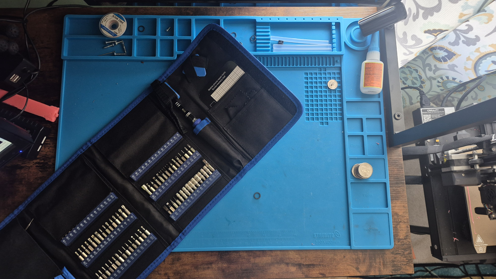
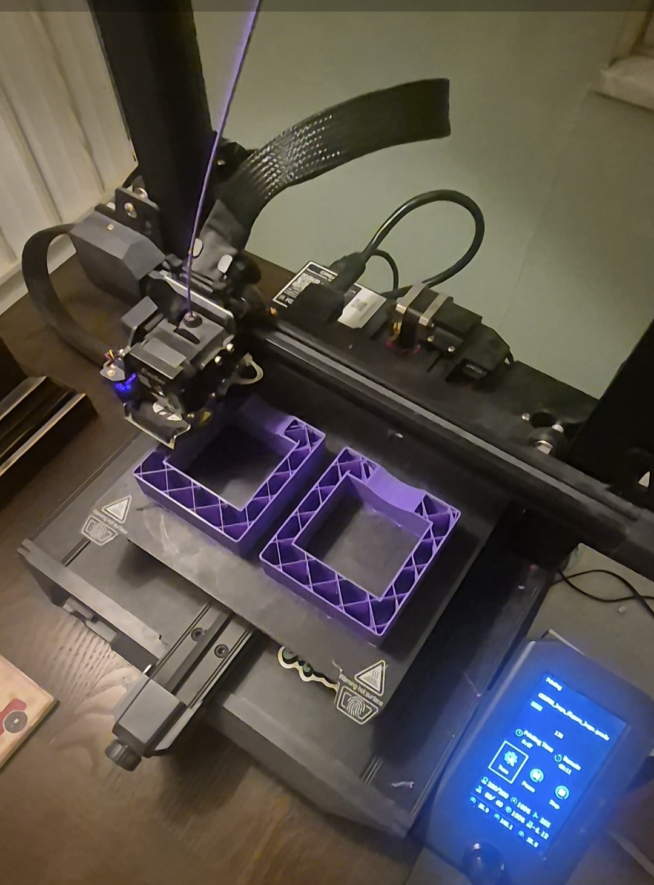

My Hobbies
I have a wide range of hobbies that keep me busy and entertained. Here are some of my top hobbies:
Running
Running has been a big part of my life. I’ve spent the last few years pushing myself in cross-country and track, always striving to improve my times and endurance.

Movies
I’m a huge movie fan! Here are a few of my all-time favorite films:
Biking
Long bike rides are another great way I enjoy staying active. Whether it’s exploring new areas or just enjoying a quiet ride, biking gives me the perfect escape.
Fixing Tech
Fixing tech is a hobby that I’ve always enjoyed. From troubleshooting computer problems to repairing gadgets, I love bringing things back to life and learning how they work.
3D Printing
I also love 3D printing! It's an exciting way to bring ideas to life. Whether it’s creating models for personal use or making fun designs, 3D printing never gets old.
Pickleball
I like pickleball because it’s fun, fast-paced, and easy to get into but still competitive. It’s a good mix of strategy and quick reflexes, and it’s just satisfying to hit the ball and play out a good rally. Plus, it’s a fun way to stay active and hang out with people.